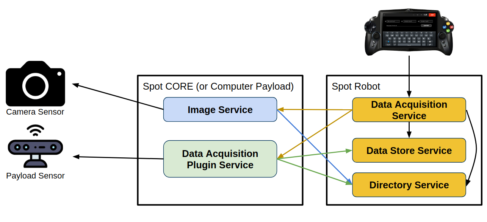

Integrate a Payload with the Data Acquisition Pipeline
The 2.1 release focuses on simplifying the integration of sensing payloads with the robot by creating the data acquisition pipeline. This document provides an overview of how a developer can write the necessary API services to integrate their sensor. The data acquisition pipeline will work with any payload, however different development steps are taken for a payload which collects image data (e.g. a 360 camera) and a payload which collects other data types and formats (e.g. a lidar or gas sensor).
To fully integrate the sensor, a payload needs to implement either the Boston Dynamics API ImageService or the DataAcquisitionPluginService, based on the type of data that will be collected and stored. These services will register with the directory service on robot, and the data acquisition service will automatically detect the new services and communicate with them for data acquisition requests. The following diagram shows the expected communication map.

Camera Payloads
To integrate a camera payload which outputs image data in a known format (e.g. raw bytes or JPEG) with the data acquisition pipeline, a developer needs to implement an ImageService.
The data acquisition service will automatically recognize any directory-registered image services, create ImageAcquistionCapabilities for the image sources, and be able to collect image data for each service using the standard ImageService RPCs. For a camera payload, a developer will need to implement an image servicer class. To simplify the implementation of an image service, a set of base image service helper functions are provided in image_service_helpers.py.
For each image source that will be available in the image service, a VisualImageSource helper class should be created to create the necessary protos for responding to gRPC requests from an image service, request and decode image data from the specific image source, and create or clear faults specific to the image source. The constructor requires the image source name to be provided (as a string), and then a class inheriting from the CameraInterface and overriding the functions for capturing image data and decoding the data. Optionally, the number of pixel rows and columns in the image can be provided as integer values in the VisualImageSource constructor. The gain and exposure time can be provided as either a function which dynamically determines the values or fixed float values in the VisualImageSource constructor as well.
The image service can be created with the CameraBaseImageServicer class, which is a helper class that will manage state and respond to the RPCs required of an image service (ListImageSources RPC and GetImage RPC). The constructor of the image service helper class requires a developer to provide the sdk robot instance, the service name, and a list of VisualImageSource’s which will represent the image sources available for capture from this image service.
CameraInterface
Each image source should implement a class which inherits the parent class CameraInterface and overrides the virtual functions blocking_capture and image_decode.
The blocking_capture interface function should be a blocking function which calls out to a camera using the hardware’s api, and collects then returns the image data. The virtual function has the following signature:
def blocking_capture(self): returns (image_data: "Any Data Format", acquisition_time_seconds: float)
The image_data returned can be any type, but must be consistent across the capture function’s output and the decode function’s input. The acquisition_time_seconds should be a float, in the service computer’s clock, which represents the time the image data was acquired.
The blocking_capture function must not return until the image_data has been acquired.
The image_decode interface function should decode the image data into bytes in the desired format and populate an image proto message with the decoded data. The virtual function has the following signature:
def image_decode(self, image_data : "Any Data Format", image_proto: image_pb2.Image, image_format : image_pb2.Image.Format, quality_percent : int)
The input image data will always be the same format (and contents) as the image data returned by the blocking_capture function. The image_proto is an Image protobuf message which will be mutated within the decode function to include: 1) the image data, 2) the pixel format, 3) the image format, and 4) optionally the transform snapshot fields. The decoding function does not need to return anything, but it must mutate the image protobuf message.
The image_format is the requested format (e.g. jpeg, raw); if the image data cannot be decoded into a specific format, an Exception should be raised within the image_decode function providing an error message (e.x. raise Exception("Unable to decode to FORMAT_RAW for the web cam")). If the requested image format is None, then the image_decode function should choose the best/preferred format for the image data and decode it into that format.
Lastly, the quality_percent may be provided as a parameter for decoding the image data.
Note: The tablet and the on-robot data acquisition service makes requests for JPEG formatted images, so the image_decode function must at least be able to respond to a image_format=image_pb2.Image.FORMAT_JPEG to ensure that the camera payload can be viewed on the tablet.
Note: Does your camera service require inputs or parameters? Do you want controls or widgets for those parameters to show up on the SpotApp android application or on Scout? Please refer to this document to learn how to add parameters to a camera service.
Using Background Capture Threads
The image service’s GetImage RPC retrieves images, based on the image source requested, from the payload using the camera’s API (e.g. OpenCV) and converts them into the bosdyn.api.Image proto message to be returned by the service. This RPC is meant to complete “quickly” when communicating with the payload and returning the collected images. To enable a fast response to the RPC for slower captures, the CameraBaseImageServicer image service constructor has the argument use_background_capture_thread, which when set to True will create a background thread for each image source that will continuously fetch images from the camera payloads and keep a buffer of these images to reduce the latency when responding to the RPC. The CameraBaseImageServicer will then respond to a GetImage RPC with the most recent image stored in the buffer from the capture thread, instead of calling out to the service. By default, an image service will have use_background_capture_thread set to True and create threads for each image source.
When use_background_capture_thread is set to False, the CameraBaseImageServicer will make the call to the blocking_capture function during the completion of the RPC.
Example Image Services
There are two SDK examples showing ImageService implementations using the helper functions: a USB web camera, and the Ricoh Theta camera.
Tips for Creating an Image Service
The
image_decodefunction should attempt to accurately fill out the PixelFormat and ImageFormat fields for the image proto in addition to the image data. This allows for end-user applications to more accurately decode the image data.The
image_decodefunction should handle an input argument ofimage_format=None. Therefore, if theimage_formatisNone, theimage_decodefunction should choose the best/preferred format and respond with image data decoded into that format and set the ImageFormat field to the chosen format in the image proto.To have a specific camera source run a background thread, but other sources in the same service run the
blocking_capturefunction at RPC time, provideuse_background_capture_threadas False to theCameraBaseImageServicerconstructor. Separately, for theVisualImageSourceobject, start the thread using thecreate_capture_thread()function before passing the list of sources to the image service constructor. The following is pseudocode demonstrating the process:visual_source1 = VisualImageSource("source1", camera_interface_object) visual_source2_not_threaded = VisualImageSource2("source2", camera_interface_object) visual_source1.create_capture_thread() CameraBaseImageServicer(robot, "image-service-name", [visual_source1, visual_source2_not_threaded], use_background_capture_thread=False)
While developing an image service, if the service is not behaving as expected or failing unexpectedly, an image service tester program (
python/examples/tester_programs/image_service_tester.py) is available to help test and debug common failure modes through detailed display of the system’s outputs.
Non-image Payloads
To integrate a payload which outputs a different, non-image format of data with the data acquisition pipeline, a developer needs to implement a DataAcquisitionPluginService.
A directory-registered DataAcquisitionPluginService will be automatically recognized by the data acquisition service on robot. The plugin service will collect the necessary payload data to respond to requests for its specific data captures from the data acquisition service. To simplify the implementation of a plugin service, a set of base plugin service helper functions are provided in data_acquisition_plugin_service.py.
The plugin service can be created with the DataAcquisitionPluginService class, which is a helper class that will manage state and respond to the RPCs required of a plugin service. The constructor of the plugin service helper class requires a developer to provide 1) a list of the data capabilities that the service can collect data, and 2) a function to collect this data.
Data Capabilities List
For each piece of data that will be collected from the payload, the plugin service must specify:
Name: uniquely identifies which piece of data will be collected.
Description: a short, human-readable description of what data is being collected. This description will be displayed on the tablet when configuring data collection actions during teleop and autowalk.
Channel name: a string that will be associated with all data collected and stored by this plugin service in the data buffer.
It is recommended to put different kinds of captures on different channels. If you want to store multiple pieces of data on the same channel during the same capture action, please set the
data_namein theDataIdentifier, so that the pieces of data can still be uniquely identified.
Using this information, the data acquisition plugin will create a list of capabilities, which are Capability(name, description, channel_name). For example, a plugin collecting laser scan data that can be both sparse and dense would have the following capabilities list:
kCapabilities = [Capability(name=”sparse", description="Sparse laser scan", channel_name=”laser_scan_sparse”), Capability(name="dense", description="Dense laser scan", channel_name=”laser_scan_dense”)]
This list of capabilities will be passed to the DataAcquisitionPluginService class’s constructor and be used to respond to the GetServiceInfo RPC.
Data Collection Function
In addition to the capabilities, the plugin service must implement a data collection function, which will collect all requested data and store it in the data acquisition store service. This data collection function will run when the plugin service receives a AcquirePluginData RPC. The data collection function must have the following signature:
def data_collect_fn(request : AcquirePluginDataRequest, store_helper : DataAcquisitionStoreHelper)
The request argument is the AcquirePluginDataRequest, which has the acquisition_requests field that contains a list of data captures that should be collected and saved by the plugin service. The store_helperargument is a DataAcquisitionStoreHelper which will be called to save the collected data.
It is important to note that the data collection function should block for the entire process of collecting the payload data and storing it in the data acquisition store service, and not return until all data is collected and has been stored.
The data collection function should perform the following things for each DataCapture requested in the acquisition_requests list passed as an argument to the function:
Create a
DataIdentifierfrom the acquisition request’saction_idfield. This data identifier will be stored with all of the collected data. If the same channel is used for all of the plugin’s data capabilities, then thedata_namefield should be populated with the data capture’snamefield.data_id = data_acquisition_pb2.DataIdentifier(action_id=request.action_id, channel=CHANNEL_NAME, data_name=DATA_NAME)
Collect the data by communicating with the payload.
Note: Long-running acquisitions should be sure to call
store_helper.state.cancel_check()occasionally to exit early and cleanly if the acquisition has been cancelled by the user or a timeout.
Store the data in the data acquisition store service using the
store_helper. The data can either be stored asAssociatedMetadata, which is json structured data, or as raw bytes data.To save data as raw bytes, the
store_datafunction is used.Tip: if the collected data is a protobuf message, the protobuf
SerializeToString()function will convert the proto into bytes.
store_helper.store_data(BYTES_DATA, data_id)
To save data as associated metadata, the
store_metadatafunction is used. TheAssociatedMetadataproto message is used to package the json data, and thereference_idof that proto should include therequest.action_id.message = data_acquisition_pb2.AssociatedMetadata() message.reference_id.action_id.CopyFrom(request.action_id) message.metadata.data.update({ "data": “special_data” }) store_helper.store_metadata(message, data_id)
Note, the DataAcquisitionPluginService class will wait to respond to the AcquirePluginData RPC until all data is collected and all store calls have been completed.
Example Plugins
There are a couple example plugin services which show data collection, creating associated metadata, and storing the data for the following types of payloads: Piksi GPS, PointCloud services, and generic GPS metadata.
Error Reporting
If a failure occurs in the plugin service, an error can be reported to the data acquisition service. If the collection of a specific piece of data fails, a DataError can be returned with the request’s specific DataIdentifier:
store_helper.state.add_errors([make_error(data_id, “Error Message!”)])
If the plugin service encounters an error that is unrelated to a specific piece of data, the data collection function can raise an Exception. This exception will be caught by the base DataAcquisitionPluginService class and will cause the AcquirePluginData RPC to respond with a STATUS_INTERNAL_ERROR. The data acquisition service will create a PluginError for this acquisition failure, which will appear in a GetStatus RPC sent to the data acquisition service.
Tips for Creating a Data Acquisition Plugin
Typically, a plugin will acquire all the requested data at once before storing any data with the
store_helper. This allows a plugin to accurately set the status asSTATUS_SAVINGto indicate that all acquisitions are complete and provide feedback for theGetStatusRPC before beginning to store its data. As well, a plugin can check if it has been cancelled before saving any data to prevent accidentally storing data for a later cancelled request.store_helper.state.set_status(data_acquisition_pb2.GetStatusResponse.STATUS_SAVING)
While developing a data acquisition plugin service, if the service is not behaving as expected or failing unexpectedly, a plugin tester program (
python/examples/tester_programs/plugin_tester.py) is available to help test and debug common failure modes through detailed display of the system’s outputs.The data collection function can be part of its own class that manages state specific to the payload. Additionally, if an individual class is created for the data collection and management, it can use background threads to collect and buffer data to speed up the response to the
AcquirePluginDataRPC.The data acquisition service will mark acquisition requests as
STATUS_TIMEDOUTif they take longer than 30 seconds. A plugin can extend the timeout used by providing an additional function following this signature:def acquire_response_fn(request:data_acquisition_pb2.AcquirePluginDataRequest, response:data_acquisition_pb2.AcquirePluginDataResponse): returns Boolean
The acquire response function can verify the request header and check if the acquisition request is valid. If it is not, the
responseargument should be modified to set thestatusfield. As well, the timeout can be extended for valid functions by updating the response’stimeout_deadlinefield. Note, the timeout should be set in the robot’s clock. Ultimately, the acquire response function will respond with a boolean indicating if the acquisition request is valid, and if so, the data collection will continue.If a plugin’s data collection is slow, it should periodically check if the RPC is ever cancelled so that it can immediately stop the no longer necessary data collection. Within the data collection function, to check if an acquisition is cancelled:
store_helper.state.cancel_check()
Be careful using async functions within the data collection function for communicating with the payload. The service architecture expects the data collection process to block until all data is completely collected and stored.
Attaching Metadata with other Data or Images
Additional metadata, such as the robot state or sensor configuration information, can be stored in association with external data collected by a plugin or images from image services. To save metadata linked with each piece of data, a DataAcquisitionPluginService can be created to collect and save this metadata. This plugin will list capture actions representing each piece of additional metadata. The plugin will receive an AcquirePluginData request from the data acquisition service on robot, which will contain a repeated list of DataIdentifiers that the metadata plugin can use to store metadata associated to these identified pieces of data.
The metadata will be configured as JSON data, and can be stored as an AssociatedMetadata proto. This proto contains a reference_id field, which will be the DataIdentifier from the data it should be associated with; if only the action_id of that identifier is filled out, than the metadata is associated with the entire action (all of the repeated data identifiers).
A plugin can store this associated metadata using the store helper with the AssociatedMetadata proto and a new DataIdentifier which uniquely identifies the associated metadata (and not what the metadata is referencing):
store_helper.store_metadata(associated_metadata_proto, data_id)
When downloading or retrieving the data from the data acquisition store, the metadata saved with each action will also be retrieved and can easily be linked back to the data it is stored with.
Directory Registration and Running the New Service
The new service, either a data acquisition plugin service or an image service, must be running and registered with the directory to communicate with the robot and the data acquisition service. This requires a unique service name, service type (“bosdyn.api.DataAcquisitionPluginService” or “bosdyn.api.ImageService”), and a service authority.
The payload computer running the new service should perform payload authentication using the GUID/secret of the payload before registering the service with the directory.
Testing the New Service
For DataAcquisitionPluginService and ImageService services, there are tester programs available which will check the communication and directory registration of the new service, as well as the API service’s specific functionalities. The plugin tester scripts should be run while the new service is also running and will print output to the terminal about any errors or warnings that occurred while running the tests.
For other types of services, the general service checking helper functions are available within the tester_programs example and can be used to check directory registration, gRPC communication with the service, and if there are active service faults for the service. Other debugging tools include the different API examples that exercise a specific service type (e.g. the get_image example) or the command line, which can list the full set of options and actions available by running the command:
python3 -m bosdyn.client {ROBOT_IP} --help